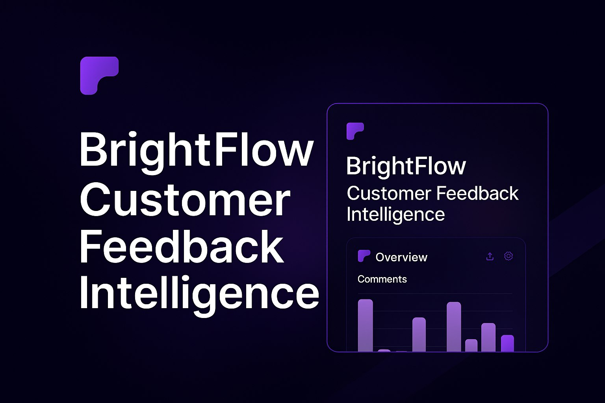

Um produto SaaS que decide o que importa primeiro
BrightFlow é uma plataforma SaaS conceitual para transformar feedback de clientes em sinais de produto. A landing page e o dashboard compartilham a mesma restrição: um conjunto denso de funcionalidades e uma parede de métricas falham do mesmo jeito quando nada é priorizado. Toda decisão estrutural aqui é sobre decidir o que vem primeiro, para que o usuário não precise.
1
métrica principal lidera o dashboard · todo o resto é secundário, sem competir por atenção
3
passos até a proposta de valor · coletar, ver, agir · cada card faz exatamente um trabalho
3
planos de preço dimensionados por tamanho de time · grátis, $29/mês, customizado · não é só uma lista de features

Dashboard SaaS padrão · o padrão que isso resolve
Quando toda métrica recebe o mesmo peso visual, nenhuma delas parece urgente. O dashboard responde "o que aconteceu" mas nunca "o que eu deveria fazer".
O problema
Conjuntos densos de funcionalidades SaaS e dashboards carregados de dados compartilham o mesmo modo de falha: quando tudo é apresentado com o mesmo peso, a interface devolve o trabalho de priorização para o usuário em vez de fazê-lo por ele.
Uma grade de funcionalidades que explica tudo não explica nada em particular. Um dashboard que mostra tudo não destaca nada primeiro.
A resposta da BrightFlow para as duas superfícies foi a mesma: escolher o que importa e deixar o layout dizer isso antes que o texto precise. A landing page se organiza em torno de uma única lógica de três passos. O dashboard se compromete com um número por vez. Nenhum dos dois depende do visitante para fazer essa triagem.
Estrutura antes do texto
O hero não abre com um parágrafo explicando o produto. Ele abre com três passos: coletar tudo, ver padrões instantaneamente, agir com confiança. A lógica do produto fica visível antes de qualquer funcionalidade ser descrita: o texto só preenche detalhes que a estrutura já sugeriu.
Texto primeiro
Um parágrafo explica o que o produto faz, depois uma lista de funcionalidades reforça isso. O visitante precisa ler todo o argumento antes que a forma do produto fique clara.
Estrutura primeiro
Três cards mostram a lógica do produto de uma olhada: coletar, ver, agir. O texto abaixo de cada card adiciona detalhe, mas a forma do produto já foi entendida antes de qualquer frase ser lida.
A grade de funcionalidades abaixo estende a mesma lógica. Cards repetidos com a mesma anatomia (ícone, título, duas linhas) tornam um conjunto denso de funcionalidades escaneável em vez de uma parede de texto. A grade colapsa para uma única coluna no mobile, então a ordem de leitura permanece a mesma independente da largura da tela.

Uma métrica, não três
O dashboard coloca o sinal mais lido no topo da hierarquia visual, em largura total, e mantém os dados de apoio acessíveis abaixo sem competir por atenção. É o número que alguém abre o produto para checar: volume de comentários, esta semana, contra a semana passada.
Métricas iguais tornam tudo a mesma prioridade, o que não torna nada principal. Um dashboard que destaca um número primeiro responde "o que eu deveria olhar" antes que o usuário precise perguntar.

Confiança antes do pedido
Integrações e depoimentos ficam acima da seção de preços, não depois dela. Um comprador avaliando uma ferramenta de feedback quer saber se ela se encaixa na stack que já usa e se outros times confiam nela antes de olhar quanto custa. Sinais de confiança colocados depois do preço parecem uma garantia encaixada às pressas para fechar uma venda já em andamento.
O mapa de integrações mostra as ferramentas que o comprador já usa (Slack, Notion, Intercom) em vez de uma lista longa com todas as conexões possíveis. O reconhecimento faz o trabalho que uma lista de funcionalidades teria que argumentar.
Preço e o fechamento
Três planos, dimensionados pelo tamanho do time em vez da quantidade de funcionalidades: um plano Starter grátis para times começando a rastrear feedback, um plano Pro com valor mensal fixo para times que precisam de análise de sentimento e integrações em escala, e um plano Enterprise customizado para compliance e suporte dedicado. O plano grátis remove a primeira objeção: testar o produto não custa nada.
O FAQ que segue cobre as objeções que de fato impedem cadastros em uma ferramenta de feedback: propriedade dos dados, limites de integração, o que acontece quando um time cresce além de um plano. O rodapé permanece minimalista por design: quando um visitante chega ao final de uma página de preços, toda escolha extra é uma chance de sair sem agir. Uma ação, nada extra.
Reflexões
Não tenho dados de uso para confirmar que a decisão de hierarquia realmente funciona. O argumento de uma métrica em vez de três é sólido no papel (a pesquisa de dashboards de Few sustenta o princípio), mas, como projeto conceitual, nunca observei um usuário real escaneando esse dashboard e agindo ou não. Eu gostaria de fazer um rastreamento de cliques nos cards de métrica antes de confiar na decisão além da etapa de revisão de design.
A página assume uma leitura única e linear. O sequenciamento de estrutura-antes-do-texto funciona se o visitante ler de cima a baixo, em ordem. Tráfego real rola de forma errática e pula direto para os preços. Eu testaria se os sinais de confiança da s04 ainda funcionam quando o preço é a primeira coisa vista, não a quarta.
Os planos são dimensionados por time, não nomeados para quem eles servem. O case de preços do Veriflow fez a escolha contrária (rótulos voltados ao público, como "para operadores solo"), e, em retrospecto, esse é o padrão mais forte. "Starter / Pro / Enterprise" ainda pede que o visitante se encaixe em um plano; um rótulo que nomeasse o comprador diretamente removeria essa etapa.
Vamos conversar
Tem um projeto?
Vamos fazer acontecer.